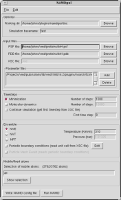

The NAMD graphical interface plugin provides an easy to use
interface for setting up common NAMD simulation jobs.
The plugin is capable of setting most NAMD job parameters, and can
read in existing NAMD config files, Tcl forces scripts, and
XSC files from previous runs when creating a new NAMD job.
Since the interface closely mirrors the NAMD config file terminology
and nomenclature, users should familiarize themselves with the
NAMD User's Guide and the
NAMD tutorial
before using this tool to create NAMD jobs.